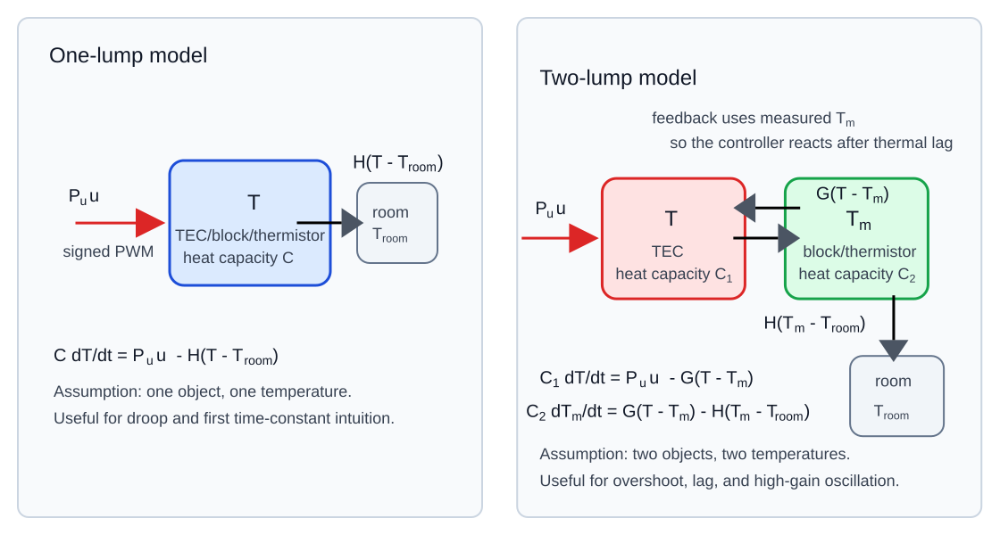

Module 6, Part II: TEC Process Model And The Simulation¶
This is the second part of Module 6. Complete Part I: P/PI Control And Lumped Modeling first. Both parts use the same prepared simulation: Part I emphasizes the one-lump model, while Part II compares the one- and two-lump models.
Introductory Material¶
Purpose¶
This part follows the first Module 6 modeling work and the initial physical PI implementation. Before beginning Part II, complete the physical \(K_p\) and \(K_i\) study and generate the comparison plots required by Module 6, Part I, A3 Question 3. Part II connects three things:
- the physical TEC/block/thermistor system,
- the feedback-control equations,
- a Python simulation GUI that lets you change model parameters and watch the predicted temperature response.
This module is not about perfect quantitative prediction. It is about learning how a simple model can qualitatively or semi-quantitatively explain droop, overshoot, lag, and the onset of instability.
Learning Objectives¶
By the end of Module 6, Part II, you should be able to:
- write and interpret the coupled energy balances for the TEC-side and measured-block thermal masses;
- show how two coupled first-order temperature equations produce one second-order equation for the measured temperature;
- use the two-lump model to explain phase lag, overshoot, and underdamped behavior that the one-lump model cannot reproduce;
- predict and verify how \(K_p\), the coupling conductance, and the two thermal capacitances affect the simulated transient;
- characterize matched physical P and PI responses using rise time, overshoot, settling time, steady-state error, and oscillation period;
- generate six simulation Goldilocks plots using one shared set of physical parameters and compare them with the six experimental Goldilocks plots; and
- select and justify \(K_p\) and \(K_i\) by connecting theory, simulation, and measurement.
The six measured and six simulated Goldilocks plots are the principal way you achieve these objectives. They are assessed together with the two-lump derivation in A3 Questions 3 and 5.
Class Theme¶
Use Models To Explain Measurements
In control theory, the process is the physical cause-and-effect system that turns the controller output into a measured response. Here, the PWM command changes the heat transported by the TEC; thermal capacitances store energy; thermal conductances move heat through the aluminum block and to the room; and the thermistor measures the resulting temperature. This chain from PWM command to measured temperature is the process we are modeling.
At A Glance¶
Before class, spend your time in this order:
- 25-30 min: Read the selected sections of Lienhard and prepare Problem 1.8 as a one-lump review.
- 15-20 min: Open the Python GUI and confirm that it runs.
- 20 min: Annotate the two-lump equations and organize your completed physical P/PI plots from Part I.
During class on October 19, the approximate schedule for one 170-minute meeting is:
- 0-15 min: Inspect the completed P/PI plots and state what the one-lump model explains and fails to explain.
- 15-35 min: Review the one-lump energy balance with Lienhard Problem 1.8.
- 35-75 min: Develop the coupled two-lump balances and reduce them to a second-order equation for the measured temperature.
- 75-120 min: Compare one- and two-lump responses and connect thermal lag to the experimental plots.
- 120-155 min: Vary one parameter at a time and interpret the results using the equations.
- 155-170 min: Wrap up: what the model explains, what it leaves out, and why the long-rod experiment will require a spatial model.
Outside-Class Workload Budget¶
| Session | Work | Planned time |
|---|---|---|
| S14 | Read the selected Lienhard material and prepare Problem 1.8 | 30 minutes |
| S14 | Open the simulation, annotate the two-lump equations, and organize the completed P/PI plots | 40 minutes |
| S14 | Total associated with S14 | 1 hour 10 minutes |
| S15 | Complete the matched model comparison and A3 evidence | 120 minutes |
| S15 | Commit, push, and prepare the A3 submission | 45 minutes |
| S15 | Total associated with S15 | 2 hours 45 minutes |
The Chapter 1 time is for reading with equations and physical interpretation, not for a quick skim. The optional extension is not part of the four-hour budget and should be attempted only after required work is complete.
Vocabulary¶
- Process: the physical system being controlled. Here, the process is the TEC/block/thermistor thermal system.
- State variable: a number that describes the current state of the model, such as temperature.
- Heat: energy transferred because of a temperature difference. Heat is not the same thing as temperature; temperature tells how hot something is, while heat is energy moving into or out of the system.
- Lumped model: a model that treats an extended object as if the entire object were at the same temperature. The lump can be viewed as a point object of finite thermal mass. See the one-lump/two-lump figure.
- Thermal mass: a synonym for heat capacity. A larger thermal mass changes temperature more slowly.
- Thermal lag: delay between changing the actuator and observing the measured temperature response.
- Droop: steady-state error in proportional-only control.
- Saturation: the actuator command reaches its limit, such as PWM 255. This could be a physical or software imposed limit.
Model Equations And Numerical Algorithm¶
The Python GUI separates the physical model from the controller. Select either a one-lump or two-lump process, then select open-loop, P, or PI control.
One-Lump Physical Model¶
Symbols Used In Module 6, Part II
| Symbol | Meaning | Units |
|---|---|---|
| \(T\) | One-lump temperature, or TEC-side temperature in the two-lump model | \(^\circ\)C |
| \(T_m\) | Measured-block temperature in the two-lump model | \(^\circ\)C |
| \(T_{\mathrm{amb}}\) | Ambient room temperature | \(^\circ\)C |
| \(T_{\mathrm{set}}\) | Controller setpoint | \(^\circ\)C |
| \(C\) | One-lump thermal capacitance, \(C=C_T+C_m\) | J/K |
| \(C_T\) | TEC-side thermal capacitance | J/K |
| \(C_m\) | Measured-block thermal capacitance | J/K |
| \(G\) | Passive thermal conductance between the two lumps | W/K |
| \(H\) | Passive thermal conductance from the measured lump to the room | W/K |
| \(u\) | Signed PWM command | PWM counts |
| \(P_u\) | TEC thermal-power coefficient for the active direction | W/PWM count |
| \(P_{u,h}\), \(P_{u,c}\) | Heating and cooling thermal-power coefficients | W/PWM count |
| \(\chi_h\), \(\chi_c\) | Heating and cooling susceptibilities | \(^\circ\)C/PWM count |
| \(r=\chi_h/\chi_c\) | Heating-to-cooling susceptibility ratio | dimensionless |
| \(e=T_{\mathrm{set}}-T_{\mathrm{meas}}\) | Temperature error | \(^\circ\)C |
| \(K_p\) | Proportional gain | PWM counts/\(^\circ\)C |
| \(K_i\) | Integral gain | PWM counts/(\(^\circ\)C s) |
| \(\Delta t\) | Numerical time step | s |
| \(\theta_T\), \(\theta_m\) | Deviations from the steady-state temperatures | \(^\circ\)C |
The one-lump model treats the TEC-side region and the measured block as one temperature. If their separate thermal capacitances are \(C_T\) and \(C_m\), the combined thermal capacitance is
Every term has units of watts. The TEC coefficient is piecewise: the program uses \(P_{u,h}\) for a positive heating command and \(P_{u,c}\) for a negative cooling command. Their ratio is
Two-Lump Physical Model¶
The two-lump model separates the TEC-side temperature \(T\) from the measured temperature \(T_m\):
Here \(C_T\) and \(C_m\) are thermal capacitances. The conductance \(G\) couples the two lumps through the passive heat flow \(G(T-T_m)\). The same heat that leaves the TEC-side lump enters the measured lump, so this term appears with opposite signs in the two equations. We simplify the apparatus by giving the TEC-side lump no separate path to the room; all heat loss to the room is represented by \(H(T_m-T_{\mathrm{amb}})\) in the measured-lump equation.
The controller responds to \(T_m\), but \(T\) and \(T_m\) do not change at the same time. Which temperature changes first if someone opens a window and \(T_{\mathrm{amb}}\) suddenly decreases? Which changes first if \(T_{\mathrm{set}}\) changes? This lag can produce overshoot or oscillation.
From Two First-Order Equations To One Second-Order Equation¶
Consider one heating or cooling direction so that \(P_u\) is constant, assume the PWM is not saturated, and use P control:
Let \(\theta_T\) and \(\theta_m\) be deviations of \(T\) and \(T_m\) from their steady-state values. The constant steady-state terms cancel, leaving
The second equation gives the hidden TEC-side temperature in terms of the measured temperature and its rate of change:
Differentiate the second equation, use the first equation to replace \(\dot\theta_T\), and then use the expression above to replace \(\theta_T\). The result is one second-order differential equation for the measured temperature:
Thus two coupled first-order equations for two stored-energy states are equivalent to one second-order equation for \(T_m\). Substituting \(\theta_m\propto e^{st}\) gives
Depending on the parameters, the two eigenvalues can be real or a complex conjugate pair. Complex eigenvalues produce an underdamped transient even though the apparatus contains no mechanical momentum.
At steady state, both temperature derivatives are zero, so
The internal conductance \(G\) sets the temperature difference between the two lumps, but it cancels from the overall balance \(P_u u=H(T_m-T_{\mathrm{amb}})\). This is the quantitative reason the one-lump model can predict the final measured temperature and P-control droop even when it fails to predict the high-gain transient.
Controller Choices¶
The measured temperature is \(T\) for the one-lump model and \(T_m\) for the two-lump model. Define
The three controller choices are
The signed command is clamped to the PWM limit. If the anti-windup option is enabled, the program prevents the integral state from continuing to grow when the actuator is saturated in the same direction as the error.
What The Algorithm Does At Each Time Step¶
The simulation described in How To Run The Python GUI performs the numerical work, but you should understand its sequence:
- Read the model's measured temperature, \(T_n\) or \(T_{m,n}\).
- Calculate the error \(e_n\).
- For PI control, propose the integral update \(q_{n+1}=q_n+e_n\Delta t\). Accept it unless anti-windup prevents the update; otherwise use \(q_{n+1}=q_n\).
- Calculate the requested command for the selected controller: \(u_n=u_{\mathrm{user}}\) for open-loop control, \(u_n=K_pe_n\) for P control, or \(u_n=K_pe_n+K_iq_{n+1}\) for PI control.
- Clamp \(u_n\) to the signed PWM limit.
- Select \(P_{u,h}\) or \(P_{u,c}\) from the sign of the applied command.
- Evaluate the heat-balance derivatives and advance \(T\) and, for the two-lump model, \(T_m\) by one Euler step.
For example, the first two-lump Euler updates are
You are not required to write this code. Use it to develop physical intuition: vary one model, parameter, or initial condition at a time; predict the result; observe the response; and interpret it using the heat balances and controller equations.

Course-specific lumped-model diagram.
Thermal Transport Theory Assignments¶
This part of the course uses lumped thermal models. A lumped model assumes that one object, such as the TEC/block assembly, can be described by one temperature. This is an approximation. It is useful before we move to the long rod, where temperature depends on position.
One-Lump Results Carried Forward From Part I¶
In Module 6, Part I, you derived the one-lump energy balance, expressed it using the measured \(\chi\) and \(\tau\), and found its steady-state temperature. Use those results here; do not repeat that assignment.
Two-Lump Theory Assignment¶
The one-lump model assumes that the measured temperature instantly equals the actuator-side temperature. The next model separates them:
T = actuator-side TEC/block temperature
Tm = measured thermistor/block temperature
A simple two-lump model is:
C_T dT/dt = Q_tec - G*(T - Tm)
C_m dTm/dt = G*(T - Tm) - H*(Tm - T_amb)
Here C_T and C_m are heat capacities in J/°C, G is the conductance
between the two lumps, and H is the conductance from the measured lump to
the room. Each term has units of W. The left side is a rate of thermal-energy
change. The right side is the sum of heat flows into and out of each lump.
Use these questions to annotate the equations before class:
- Identify which term transfers heat from the TEC side to the measured thermistor/block side.
- Identify which term describes heat loss from the measured block to room air.
- Explain why
Tmcan lag behindT. - Explain why a controller that uses
Tmmay react too late. - Divide the measured-lump equation by \(C_m\) and compare it term by term with the rate-constant form \(dT_m/dt=k_{21}(T-T_m)-k_m(T_m-T_{\mathrm{amb}})\). Identify \(k_{21}=G/C_m\) and \(k_m=H/C_m\), give their units, and explain how increasing each one changes the equilibration between the lumps or the relaxation toward room temperature.
Looking Ahead: From Lumps To A Temperature Field
The two-lump model is a crude spatial approximation. It replaces an extended apparatus with two internally uniform regions connected by a thermal conductance. It distinguishes a region near the TEC from a region near the thermistor, but it contains no continuous distance, temperature gradient, or spatial coordinate.
The long-rod experiment cannot be described by a single temperature. It needs a temperature field that depends on longitudinal position and time:
For the rod we will move toward equations of the form
with an additional term that represents heat loss from the sides to the room:
In these equations, alpha is the thermal diffusivity in m²/s and beta is a
side-loss rate constant in 1/s.
You do not need to solve these equations or submit written answers about them in Module 6. They are included to show where the lumped-model sequence leads.
Pre-Class Assignment¶
How To Run The Python GUI¶
Clicking the Python source-code link opens or downloads the .py file. It does
not run the simulation. To run the model, download the file and run it from a
folder on your own computer.
First make a working folder and put the Python file there:
mkdir -p ~/phys39-lab7
cd ~/phys39-lab7
Download this file into that folder: Lab_6_7_modeling_tec.py.
Set up Python the first time you use this folder:
python3 -m venv .venv
source .venv/bin/activate
python -m pip install matplotlib
Then run the desktop GUI:
python Lab_6_7_modeling_tec.py
After the first setup, start from this folder and run:
cd ~/phys39-lab7
source .venv/bin/activate
python Lab_6_7_modeling_tec.py
Before Class¶
-
Read Lienhard, Chapter 1: Introduction, selectively. Focus on conservation of energy, thermal resistance, heat capacity, and lumped models. Prepare Problem 1.8 for possible board work: identify the physical system, write the heat balance, check units, and state the lumped-model approximation.
-
Follow How To Run The Python GUI to download and open the prepared simulation:
text
Lab_6_7_modeling_tec.py
- Run the Python GUI:
bash
python Lab_6_7_modeling_tec.py
- In your notebook, copy the two-lump model equations and label the meaning of each variable.
- Answer the five prompts in the Two-Lump Theory Assignment.
Pre-Class Questions¶
Write short answers before class.
- In the two-lump model, why might \(T\) and \(T_m\) be different?
- Which temperature does the controller measure?
- Which parameter in the model most directly changes the amount of thermal lag?
In-Class Assignment¶
What You Will Do¶
You will:
- run the Python simulation GUI,
- interpret the matched physical P and PI responses completed in Part I,
- compare the one-lump and two-lump models,
- reproduce the measured progression from low to high P and PI gains,
- connect each important response feature to a model parameter and its Euler update,
- explain what this model teaches you about the real TEC experiment.
Before beginning the comparison, make one quick simulation check: reproduce one familiar open-loop result and one familiar P-control droop result from Part I. This confirms your measured parameters and simulation settings. Do not make another table or written analysis for this check.
Part 1: Match The Goldilocks P And PI Trends¶
The purpose of this exercise is to build an explicit match between experiment and theory. A successful comparison does more than produce similar-looking curves: it identifies which terms and parameters in the model control the features measured in the experiment, including rise time, droop, overshoot, and the number and decay of oscillations.
Set the physical model to two_lump. Enter your measured values of
\(T_{\mathrm{amb}}\), \(\chi_c\), \(\chi_h\), and \(\tau\), and use the same
setpoints, PWM limit, and starting conditions as in your six physical runs.
Your numerical gains may differ from those used by other teams.
The measurements determine the one-lump behavior but do not uniquely determine the internal two-lump parameters \(G\) and \(C_T/C\). Use the simulation to find one shared set of these physical parameters that qualitatively reproduces your experimental progression. Do not choose different physical parameters for each gain. The experiments all use the same apparatus, so all six simulations must likewise use the same \(\chi_c\), \(\chi_h\), \(\tau\), \(G\), \(C_T/C\), TEC voltage, TEC resistance, setpoints, starting conditions, and PWM limit. Change only controller mode, \(K_p\), and \(K_i\) according to the six-run protocol.
- Set \(K_i=0\). Run your experimental low, medium, and high \(K_p\) values, resetting the simulation before each run. Look for the same progression as in your P-only Goldilocks plots: slow response and larger droop, a useful compromise, and clear overshoot or ringing.
- If the progression does not resemble your measurements, vary only \(G\) or \(C_T/C\), predict the effect, and repeat all three P runs. Continue until one set of physical parameters gives a reasonable qualitative comparison.
- Keep those physical parameters fixed. Select
pi, hold \(K_p\) at the value used for your three experimental PI runs, and simulate your low, medium, and high \(K_i\) values. Reset the integral before each run. - Look for the PI progression in your Goldilocks plots: slow removal of steady-state error, a useful compromise, and excessive overshoot, ringing, or saturation.
- Starting from your shared model, vary one parameter at a time. Determine which parameters most strongly change rise time, P-control droop, overshoot, and the number and decay of oscillations. Return each parameter to the shared value before testing the next one. Test \(K_p\), \(K_i\), \(G\), and \(C_T/C\) explicitly. You may also perturb \(\tau\) or \(\chi\) to understand sensitivity, but restore their measured values for the final comparison.
- Make and label the six simulation Goldilocks plots using the same organization, axes, and labels as the six experimental Goldilocks plots.
Record the single physical parameter set used for all six simulations:
| \(\chi_c\) | \(\chi_h\) | \(\tau\) | \(G\) | \(C_T/C\) | TEC voltage | TEC resistance | Setpoints | PWM limit |
|---|---|---|---|---|---|---|---|---|
Then compare the six conditions:
| Condition | Controller | \(K_p\) | \(K_i\) | Experimental behavior | Simulated behavior | Agreement or mismatch |
|---|---|---|---|---|---|---|
| P low | P | 0 | ||||
| P medium | P | 0 | ||||
| P high | P | 0 | ||||
| PI low | PI | |||||
| PI medium | PI | |||||
| PI high | PI |
Summarize the parameter-to-behavior correspondence:
| Observed behavior | Parameter varied | Where it enters the equation or update | Predicted change | Simulated change | Experimental evidence |
|---|---|---|---|---|---|
| Rise time | |||||
| P-control droop | |||||
| Overshoot | |||||
| Number and decay of oscillations |
Answer:
- Which parameters most strongly controlled rise time, P-control droop, overshoot, and the number and decay of oscillations? Explain each connection using the model equations.
- How did changing \(G\) or \(C_T/C\) affect lag, overshoot, and ringing?
- Which temperature does the controller use to calculate error, and why does that delayed measurement make high gain dangerous?
- Which trends in the six experimental plots did one shared two-lump model reproduce successfully?
- What important disagreement remains between simulation and experiment?
- Why would changing the physical model parameters separately for every gain weaken the comparison?
Part 2: Interpret The Match¶
Use the equations, six-run comparison, and parameter table to prepare A3. Your interpretation must make four connections:
- Identify the internal heat flow that makes \(T_m\) lag behind \(T\).
- Explain why that lag permits overshoot even though the one-lump P model is monotonic.
- Explain which parameters primarily changed rise time, droop, overshoot, and oscillation decay in your controlled comparisons.
- State one important agreement and one important disagreement between the shared two-lump simulation and the physical apparatus.
Do not write a second report for Part II. These results become the model-limit and experiment-theory sections of A3.
Post-Class Assignment¶
Preserve The A3 Evidence¶
Before leaving S15, save the shared model settings, six simulation comparisons, parameter-to-behavior table, exact run command, and links to the experimental data. Preserve the prepared simulation in your repository. These are A3 working materials, not a separate submission.
Oral Review Questions: Process Modeling¶
Use this modeling question bank to check your understanding and prepare A3:
- Which physical lag in the apparatus can produce overshoot or oscillation as gain increases?
- Identify one model parameter, give its units, and explain its physical effect on the simulated response.
Also prepare the Module 5 P-control questions and Module 6 PI-control question.
Instructor Notes¶
- This module is a consolidation point after manual control and P/PI control.
- Keep the emphasis on physical interpretation, not formal control theory.
- Students should leave understanding why delay plus gain causes trouble.
- The long-rod model should be introduced as a preview, not fully derived here unless the class is ready.